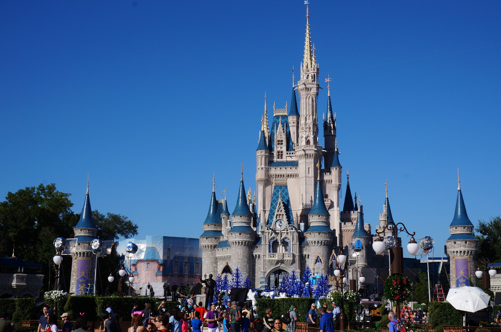
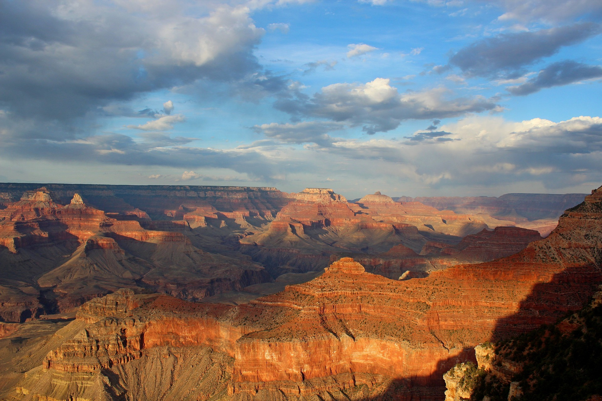
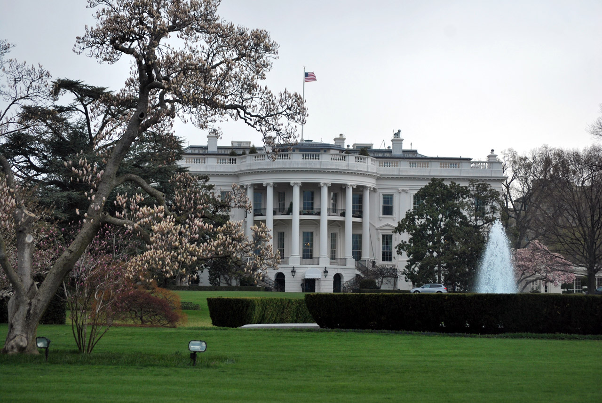
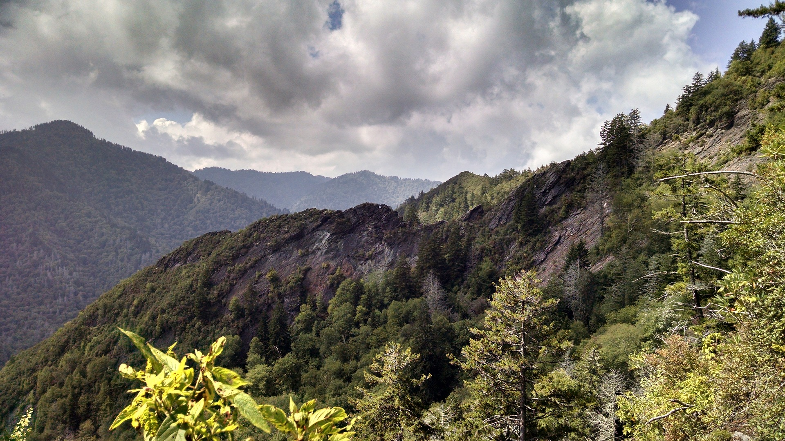
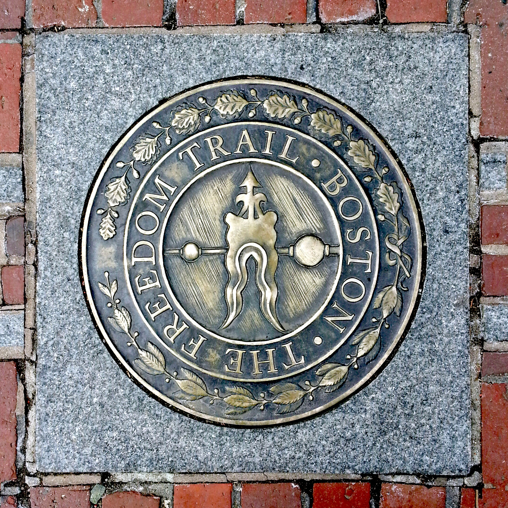

Walt Disney
The Walt Disney World Resort is an entertainment complex at Bay Lake and Lake Buena Vista, Florida, near Orlando and Kissimmee, Florida. The resort is the flagship destination of Disney's worldwide corporate enterprise.

Golden Gate Bridge
The Golden Gate Bridge is a suspension bridge spanning the Golden Gate strait, the one-mile-wide, three-mile-long channel between San Francisco Bay and the Pacific Ocean

Grand Canyon
The Grand Canyon in Arizona is a natural formation distinguished by layered bands of red rock, revealing millions of years of geological history in cross-section. Vast in scale, the canyon averages 10 miles across and a mile deep along its 277-mile length. Much of the area is a national park, with Colorado River white-water rapids and sweeping vistas.

Empire State Building
The Empire State Building is a 102-story skyscraper located on Fifth Avenue between West 33rd and 34th Streets in Midtown, Manhattan, New York City.

White House
The White House is the official residence and principal workplace of the President of the United States, located at 1600 Pennsylvania Avenue NW in Washington, D.C. It has been the residence of every U.S. president since John Adams in 1800.

Smoky Mountains
Great Smoky Mountains National Park straddles the border between North Carolina and Tennessee. The sprawling landscape encompasses lush forests and an abundance of wildflowers that bloom year-round. Streams, rivers and waterfalls appear along hiking routes that include a segment of the Appalachian Trail. An observation tower tops Clingmans Dome, the highest peak, offering scenic views of the mist-covered mountains.

National Mall
The National Mall is a national park in downtown Washington, D.C., the capital of the United States. The National Park Service administers the National Mall, which is part of its National Mall and Memorial Parks unit.

Niagra Falls
Niagara Falls is the collective name for three waterfalls that straddle the international border between Canada and the United States; more specifically, between the province of Ontario and the state of New York.

Freedom Trail
The Freedom Trail is a 2.5-mile-long path through downtown Boston, Massachusetts that passes by 16 locations significant to the history of the United States.